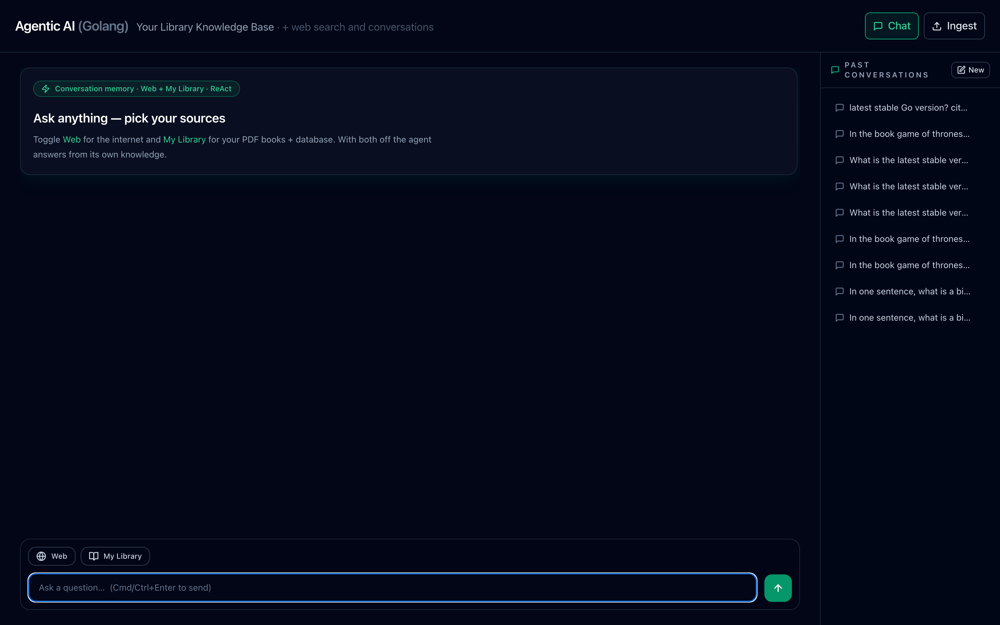
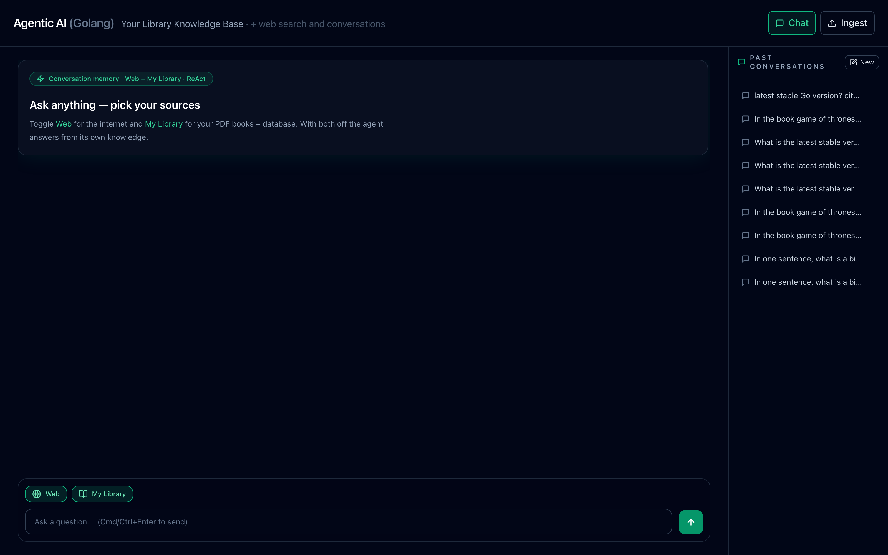
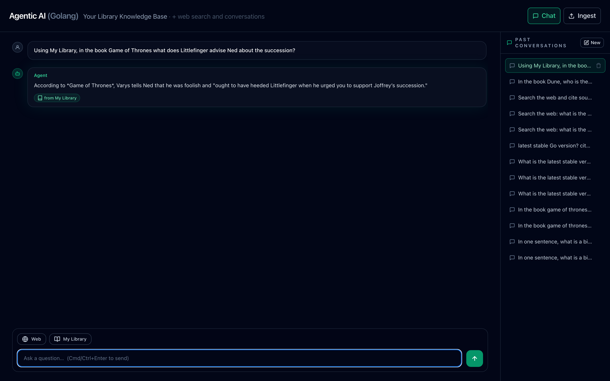
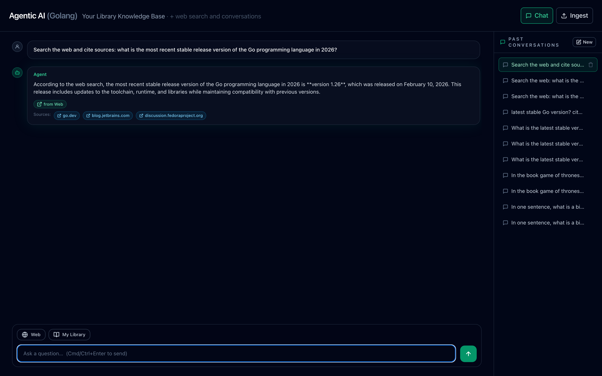
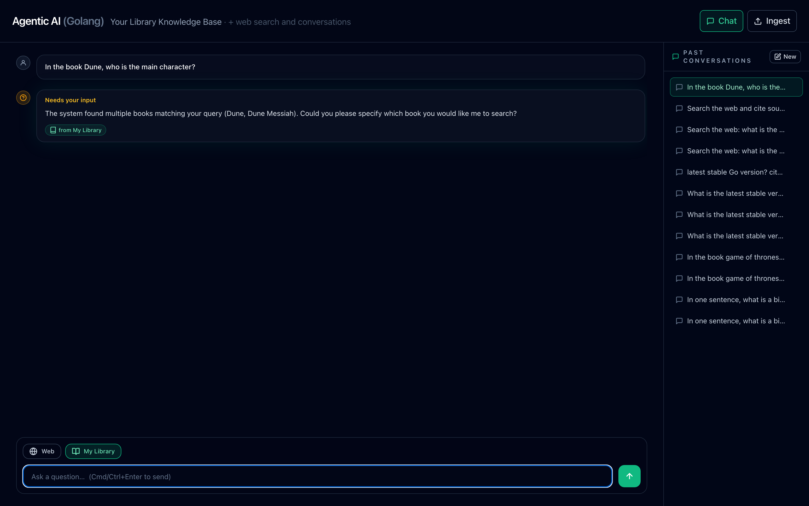
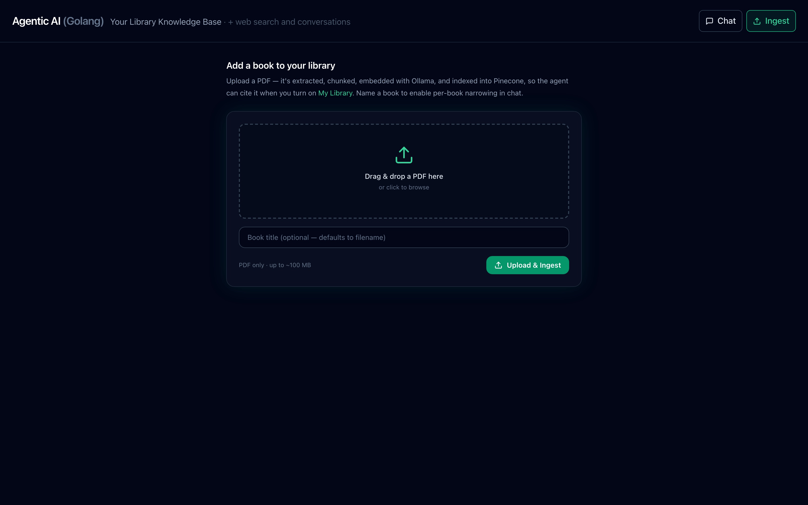
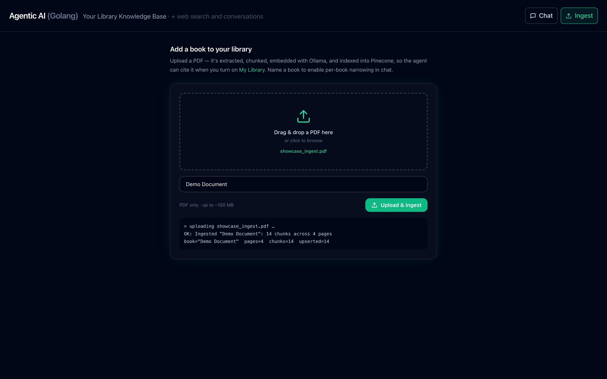

The agent in action
A step-by-step tour of the live UI — from an empty chat to library-grounded answers, web citations, ingestion, and conversation history. Click any screenshot to zoom.
Start a conversation, pick your sources
The hero greets you with the two source toggles off by default. Flip 📚 My Library and/or 🌐 Web to decide where this turn's answer may come from.

Toggle the sources on
Active toggles turn emerald. The active set decides which retrieval tools the ReAct loop is allowed to call this turn — search_pdf + mcp for Library, web_search for Web.

Answer from My Library, narrowed to a book
Name a book and the agent resolves it against the catalog and filters the vector search to that title. The answer carries a from My Library provenance tag.

Answer from the Web, with clickable sources
With 🌐 Web on, the agent searches Tavily and renders the source URLs as clickable "Sources" chips beneath a from Web tag.

Ask for clarification instead of guessing
When My Library is on but the topic can't be pinned to one book, the agent asks back — Needs your input — rather than hallucinating across thousands of chunks.

Add books with drag-and-drop ingestion
The /ingest.html page takes a PDF and runs extract → chunk → embed → upsert into Pinecone and the books catalog, adding it to My Library.


Reopen any past conversation
The right-hand sidebar lists prior conversations. Click one to reload its full thread — answers, source tags, and citations included.